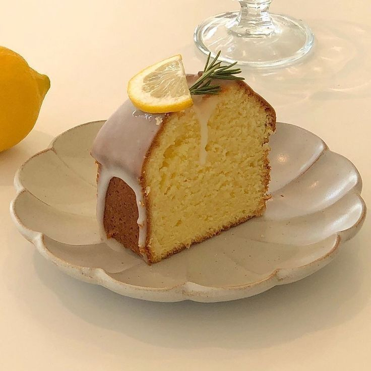

Lemon Drizzle Cake

Descriptions:
A Lemon Drizzle Cake is like a sunny day on a plate!
With its fluffy layers kissed by zesty lemon goodness and a sweet drizzle on top, every bite is a burst of happiness and sunshine ^^
Ingredients:
- Flour: 2 cups
- Baking Powder:2 teaspoon
- Salt: 1/4 teaspoon
- Softened Butter: 1 cup
- Sugar: 2 cups
- Egg: 4 large eggs
- Lemon: 2 lemons
- Lemon Juice: 1/2 cup
- Milk: 2 tablespoons
- Simple Steps to Make Lemon Drizzle Cake -
- Preheat oven to 350°F (175°C). Grease and flour two 9-inch (23cm) round cake pans.
- In a bowl, beat softened butter and sugar until fluffy.
- Beat in eggs one at a time. Add lemon zest and juice, mix until combined.
- In another bowl, whisk flour, baking powder, and salt.
- Gradually add flour mixture to butter mixture, alternating with milk. Mix until smooth.
- Divide batter evenly between pans. Bake for 25-30 mins, until a toothpick comes out clean.
- Cool cakes in pans for 10 mins. Remove from pans, cool completely on wire racks.
- Whisk lemon juice and powdered sugar for glaze. Drizzle over cooled cakes.
- Slice and serve your delicious Lemon Drizzle Cake!